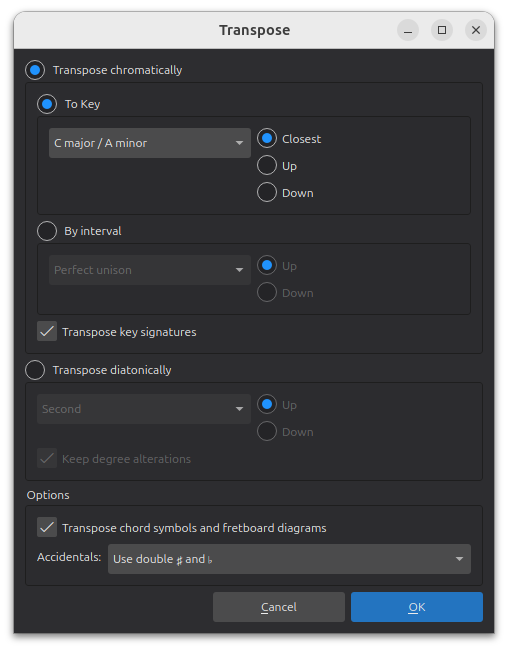
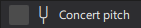
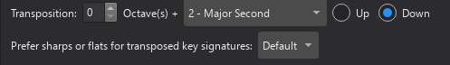

移调
概述
移调是将所选音符的音高按相同音程升高或降低的操作。
在 MuseScore Studio 中，您可以使用键盘快捷键或通过移调对话框来移调音乐。
使用键盘快捷键移调
要使用键盘快捷键移调，首先选中一段音符（参见选择元素）。然后根据您的移调需求，使用以下选项之一：
半音移调
按 Up 或 Down 以半音为单位向上/向下移动选区
自然音移调
按 Alt+Shift+Up/Down 以音阶级数为单位向上/向下移动选区（Mac：Option+Shift+Up/Down）。
按八度移调
按 Ctrl+Up/Down 以八度为单位向上/向下移动选区（Mac：Cmd+Up/Down）。
使用移调对话框
移调对话框让您对移调有更多控制，提供移调到所选调性或以特定音程移调的选项。
首先选中您要移调的一段音符。（参见选择元素）。如果没有进行选择，整个乐谱会被自动选中进行移调。
然后通过选择工具 → 移调... 打开对话框。

半音移调
选中此项时，您可以选择移调到特定调，或按指定音程移调。
半音移调到特定调：
- 选择到调
- 选择是移调到最近的调（相对于选区当前的调号），还是向上或向下移调到目标调号
- 从下拉菜单中选择目标调号
- 保持移调调号选中，以移调选区中任何现有的调号（取消选中将保持任何现有调号不变）
- 保持移调和弦符号和品位图选中，以移调选区中任何现有的和弦符号和品位图（取消选中将保持任何现有和弦符号和品位图不变）
- 单击确定
按音程半音移调
要以半音增量向上或向下移调所选音符：
- 选择按音程
- 选择是将选区按指定音程向上还是向下移调
- 从下拉菜单中选择移调音程
- 根据需要选择移调调号和移调和弦符号和品位图选项（见上文）
- 单击确定
自然音移调
选择此项可按指定音程移调选区，而不更改现有的调号。注意：选区中各音高之间的音程关系会因此改变！
- 选择自然音移调
- 选择是将选区按指定音程向上还是向下移调
- 保持保留音级变化选中，以保留选区中的任何变音记号。变音记号将相对于现有调号进行修改。取消选中将在移调时移除任何现有的变音记号。
- 保持移调和弦符号和品位图选中，以移调选区中任何现有的和弦符号和品位图（见上文）
- 单击确定
处理移调乐器
移调音高与实际音高
移调乐器（如单簧管、法国号、小号等）的记谱音高（和调号）与其实际发音不同。记谱音高称为记谱音高，而实际音高称为实际或发音音高。
默认情况下，程序显示所有谱表为记谱音高。不过，如果您希望以实际音高查看乐谱，只需勾选状态栏中（音叉图标左侧）的“实际音高”复选框。

设置移调音程
当您在新乐谱或添加或移除乐器对话框中设置乐谱时，移调调号会自动应用到任何移调乐器。不过，如果出于任何原因您需要手动设置谱表移调，方法如下。
- 右键单击乐器谱表，并选择谱表/分谱属性；
- 在对话框下部“移调”旁边，选择该乐器发音高于/低于实际音高的音程。（例如，降 B 单簧管的音乐记谱比其发音音高高一个全音，因此移调设置为向下大二度。）\

- 单击
确定。
正确的移调调号现在会出现在谱表上。
控制等音拼写
移调调号的等音拼写（用升号还是降号）在谱表/分谱属性中设置（参见设置移调音程）。
要更改乐谱中音高的等音拼写，参见更改拼写。